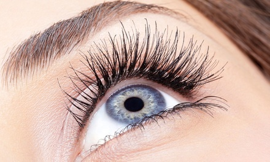
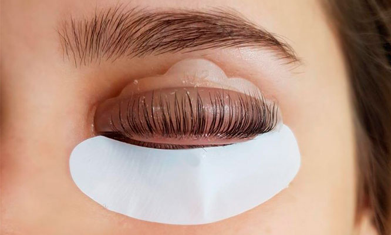

LIFTING DE PESTAÑAS
El lifting de pestañas es una innovadora técnica estética en la que se busca alisar, levantar y estirar las pestañas superiores de forma natural desde la raiz para dar un efecto alargador y curvado, lo que hace que visibkeente esten mas largas.
Esla opcion ideal para tododo tipo de pestañas, sean rectas o curvadas.
Es un tratamiento que aporta longitud, densidad, profundidas, dando un efecto de páarpado más elevado por loq ue rejuvenece la mirada.
El tratamiento incluye la aplicacion de un tinte negro para brindar un efecto rimmel y hacerlas aun mas visibles.
Al finaizar el tratamiento se aplica una nutricion (Keratina o Botox) que ayuda a hidrtar y fortalecer las pestañas.
El tratamiento tiene una duracion de 4 a 6 semanas aproximadamente.


